4.1 Component
- Untuk menampilkan isi dari server.component.html maka buka file app.component.html dan tambahkan code berikut
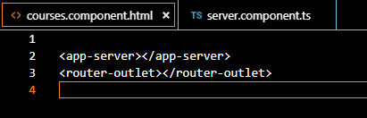
- jika berhasil maka hasilnya seperti berikut
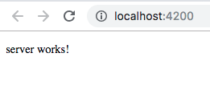
../../../../../Users/dimaswahyu/Desktop/Screen%20Shot%202019-02-
- buatlah juga sebuah component baru dengan nama servers (ng generate component nama-component) atau (ng g c servers) “server pakai s”
4.2 Component templateUrl dan template
- buka file servers.component.ts modifikasi codenya menjadi seperti berikut

- running (ng serve) maka hasilnya seperti berikut
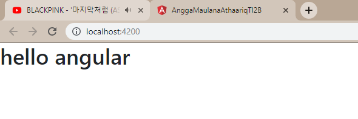
- buka file server.component.ts (default generate)
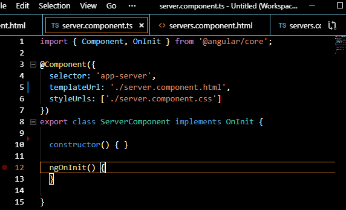
- tambahkan code berikut pada server.component.html
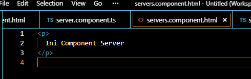
- buka file app.component.html dan tambahkan component server agar terlihat perbedaannya
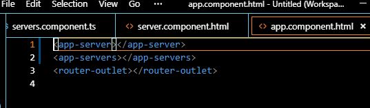
- running dan hasilnya
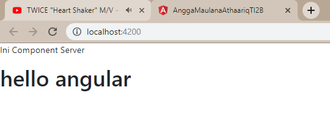
4.3 Component styles dan stylesUrl
buka file app.component.html
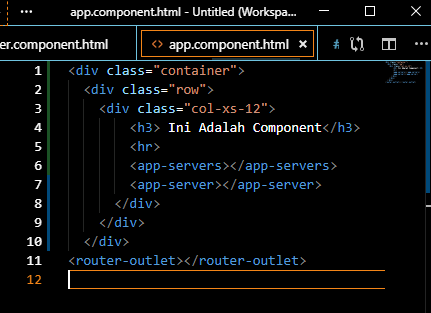
buka file app.component.css
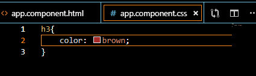
buka file server.component.ts dan tambahkan code berikut
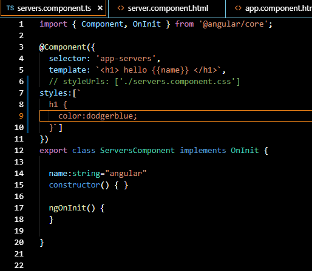
running hasilnya
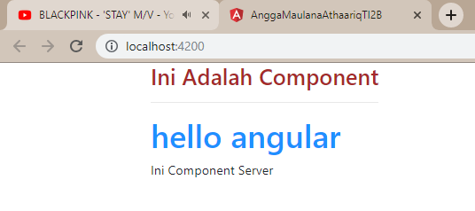
- Component Selector
selector custom prefix
buka server.component.ts
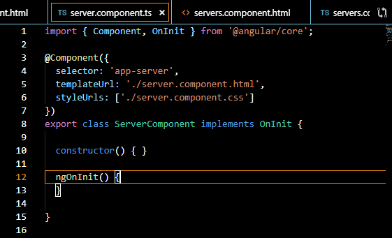
buka app.component.ts
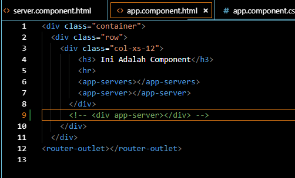
Selector menggunakan square bracket / Directive custom prefix
buka file server.component.ts
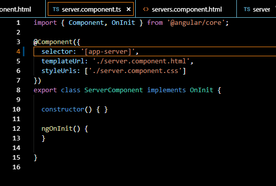
dan jalankan ng serve, maka akan terjadi error (app-server is not a known element)
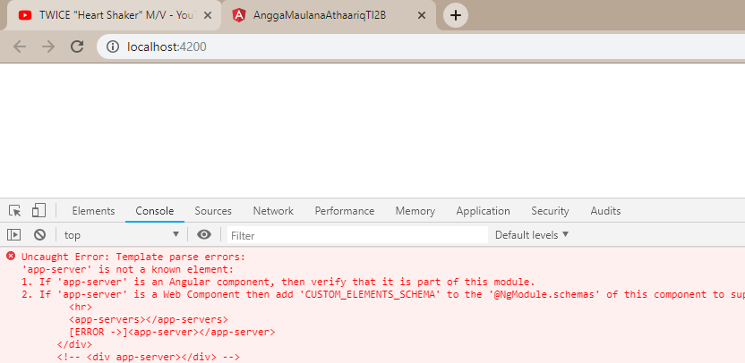
jika kita buka app.component.html maka akan ada error disana, maka pada app.component.html harus kita rubah menjadi seperti berikut
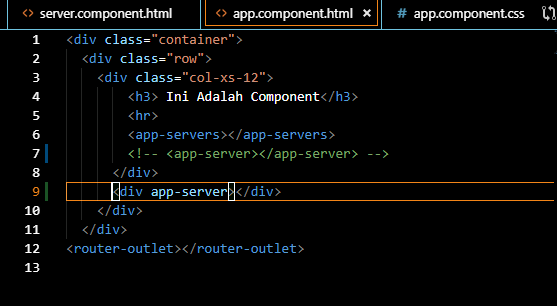
selector menggunakan class
buka file server.component.ts rubah selector menjadi sebuah class, seperti berikut
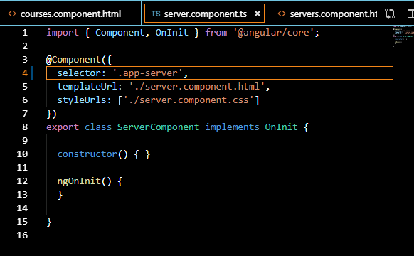
untuk memanggil selector class maka pada element kita tambahkan sebuah class seperti berikut
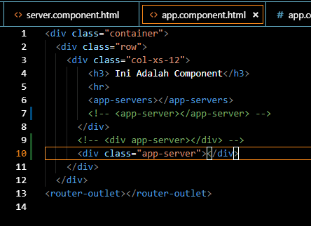
4.5 Component API
buatlah sebuah component baru dengan nama favorite (ng g c favorite)
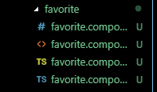
buka file app.component.ts dan buat sebuah property dengan nama post
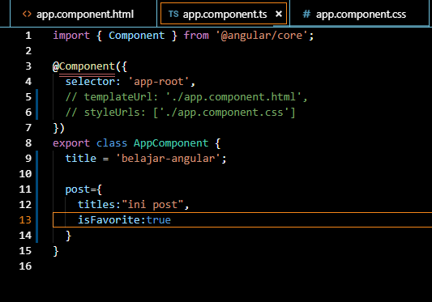
buka file app.component.html dan tambahkan code berikut (abaikan errornya terlebih dahulu)
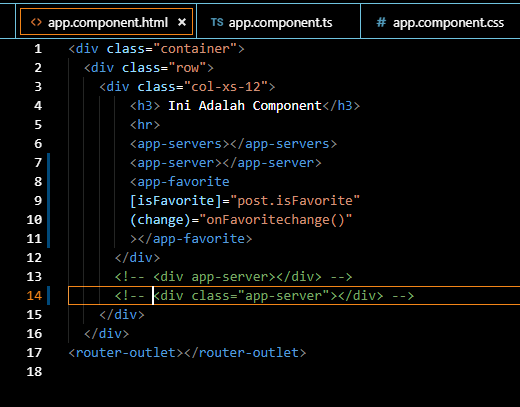
4.6 Input Properties
jika sudah diinstal buka angular.json dan tambahkan style seperti berikut
buka file app.component.html dan modifikasi kodenya menjadi berikut
buka file favorite.component.ts tambahkan property dan sebuah function onClick seperti berikut
tambahkan decorator input
jika sudah jalankan localhostnya, jika benar maka akan muncul full star pada saat bintang diklik maka akan berubah menjadi empty star
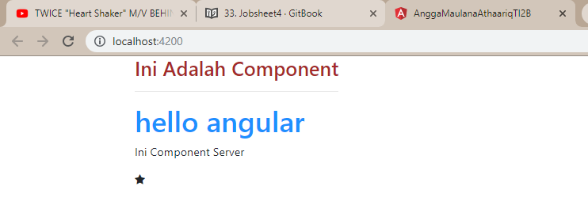
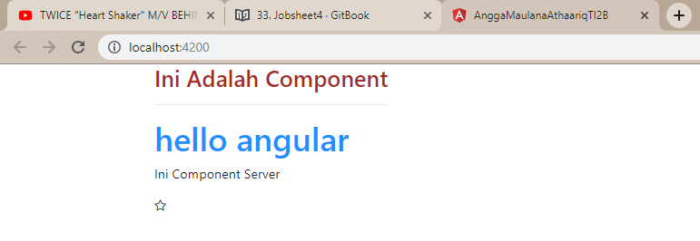
buka file favorite.component.ts modifikasi codenya menjadi berikut
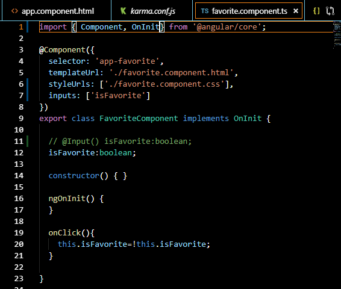
jalankan localhost maka hasilnya akan sama
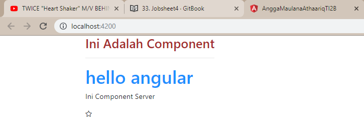
select property isFavorite maka secara otomatis semua kata isFavorite akan ikut terseleksi
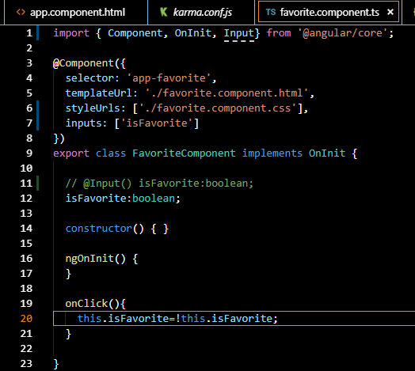
tekan F2 maka akan muncul seperti berikut
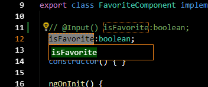
ganti dengan kata coba
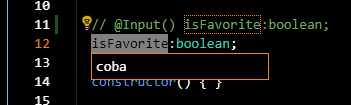
lihat hasilnya jika kita lihat hasilnya yang berubah hanya dalam kelas FavoriteComponent saja sedangkan pada property input pada decorator component tidak ikut terubah
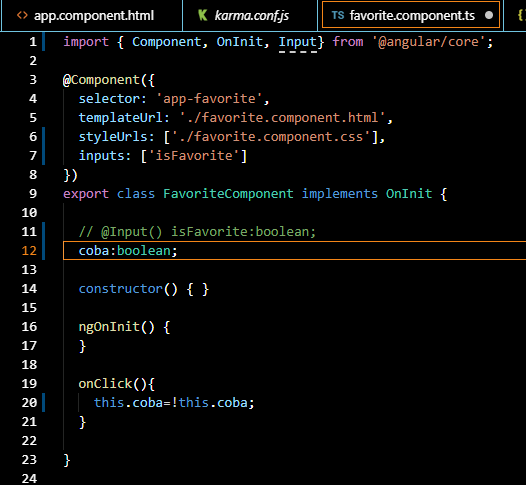
4.7 Aliasing Input Properties
buka file favorite.component.ts tambahkan function onClickAlias() dan modifikasi codenya menjadi seperti berikut
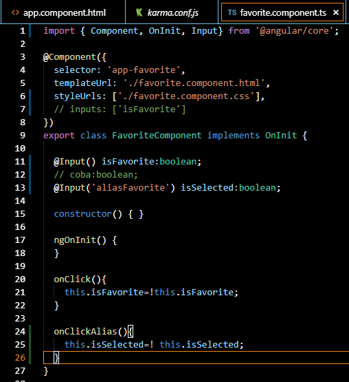
buka file favorite.component.css tambahkan code berikut
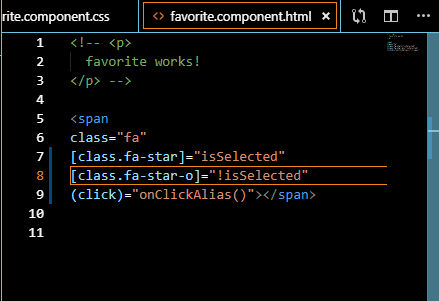
buka file app.component.html dan ganti input property yg sebelumnya [isFavorite] menjadi [aliasFavorite]
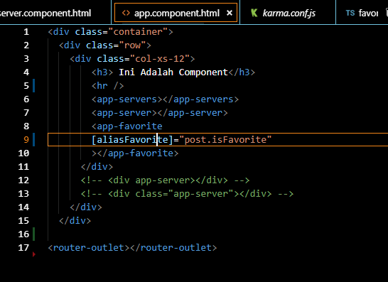
jalankan localhost maka hasilnya akan tetap sama dengan tanpa menggunakan alias
4.8 Output Properties
buka file app.component.ts buatlah function onFavoriteChanged()
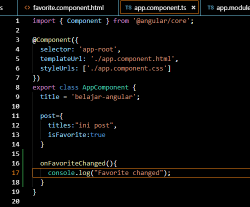
buka file app.component.html tambahkan output properties
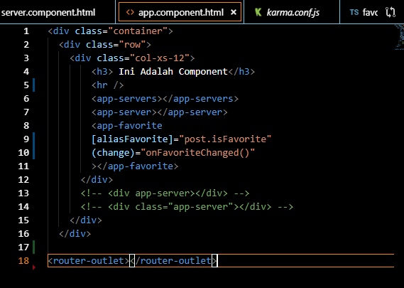
jika kita run localhost maka console tidak akan menampilkan sesuatu. Untuk itu kita membutuhkan decorator output
buka file favorite.component.ts tambahkan decorator output dan emitEmiter seperti berikut
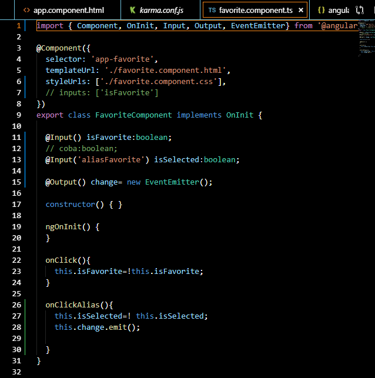
jalankan localhost dan buka console. Jika berhasil saat kita klik bintang maka akan muncul favorite change pada console
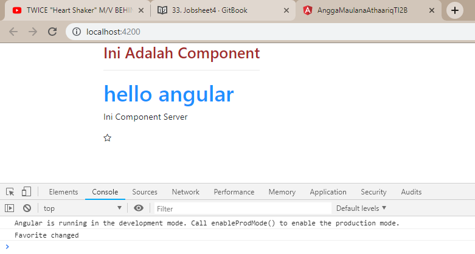
4.9 Passing Event Data
Menggunakan cara pertama menggunakan dollar event object ($event)
buka file favorite.component.ts
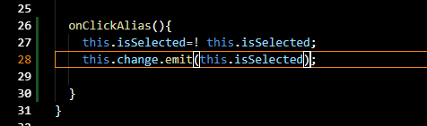
buka file app.component.ts
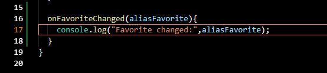
buka file app.component.html
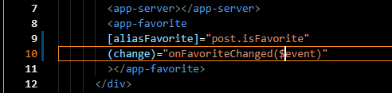
Jalankan localhost:4200 dan lihat hasilnya pada console, pada saat full star kita klik maka pada console akan menampilkan perubahan value (Boolean)
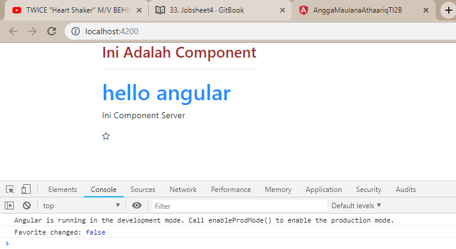
cara kedua menggunakan instead pass object. Object ini mempunyai property dengan nama newValue dan di set this.isSelected pada favorite.component.ts seperti berikut
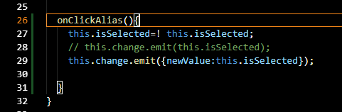
agar app.component dapat menerima value yang diberikan oleh favorite.component.ts maka parameter pada method onFavoriteChanged dirubah menjadi eventArgs (Argument pass with event) dan untuk menampilkan kita panggil eventArgs pada console log seperti pada gambar berikut
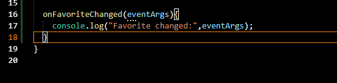
jalankan localhost:4200 lakukan perubahan menjadi empty star dan lihat pada console. Data yang dikirim berupa object bukan value seperti sebelumnya
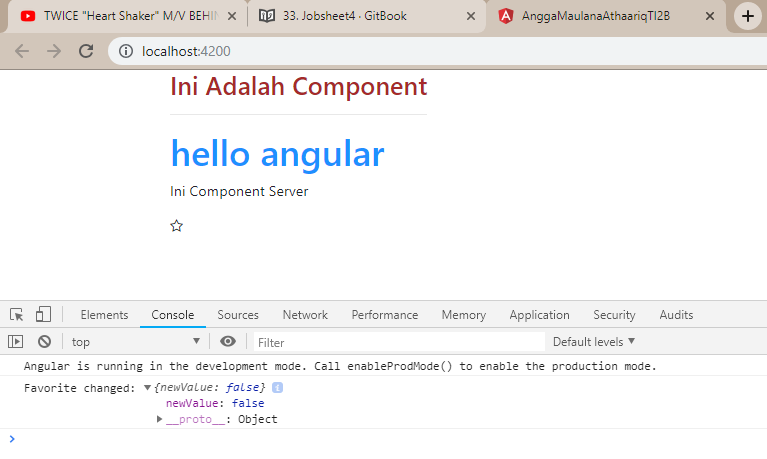
Cara ketiga menggunakan interface. buka file favorite.component.ts dan export sebuah interface dengan nama FavoriteChangeEventArgs dengan nama property newValue bertipe Boolean
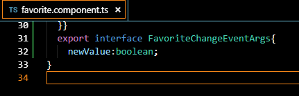
setelah itu buka file app.component.ts tambahkan pada parameter eventArgs sebuah alias interface dengan nama FavoriteChangeEvent (nama Interface yang telah dibuat pada favorite.component.ts
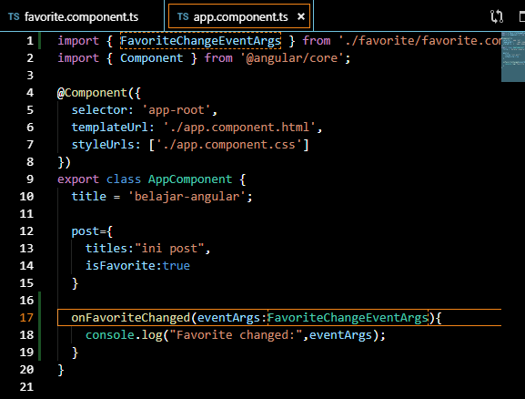
hasilnya akan sama dengan menggunakan instead pass object
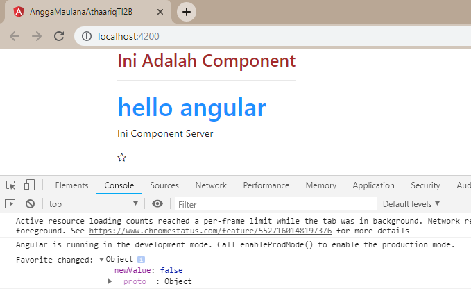
4.10 Aliasing Output Properties
tambahkan binding property name pada decorator output pada favorite.component.ts
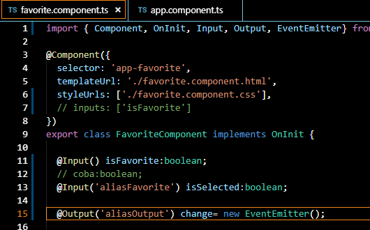
setelah kita tambahkan binding property name pada decorator ouput maka kita tambahkan juga pada output properties di app.component.html
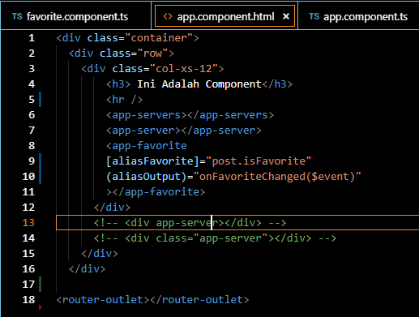
4.11 Templates
buka file favorite.component.html tambahkan code html
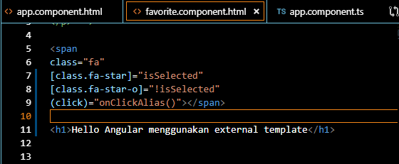
buka file favorite.component.html modifikasi codenya menjadi berikut
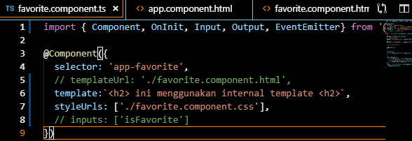
4.12 Styles
buka file favorite.component.html pastikan pada property pada decorator component terdapat styleUrl
buka file favorite.component.css tambahkan code berikut
run localhost:4200
buka file favorite.component.ts tambahkan property styles
run localhost maka hasilnya seperti berikut : (bintang berwarna hijau)